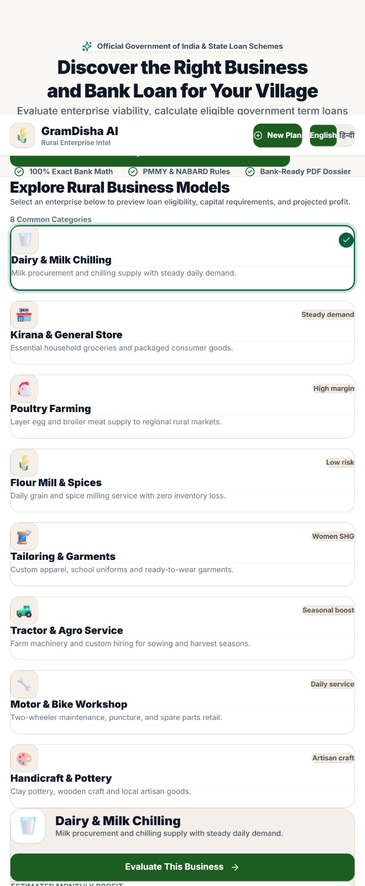

Hackathon Prototype
AI / FinTech / Rural Entrepreneurship
GramDisha AI
AI-Driven Hyper-Local Business Advisory & Financial Structuring Assistant for Rural Micro-Entrepreneurs.
Problem
Rural micro-entrepreneurs often lack access to simple financial guidance, local business intelligence and structured tools for evaluating business opportunities.
Solution
- Business viability analysis with financial structuring and project-cost calculation
- Loan structuring guidance and local intelligence including demand and competition analysis
- Risk analysis, viability scoring and AI-driven business recommendations
- Report generation with multilingual support potential
Tech Stack
React
Vite
Tailwind CSS
Python
FastAPI
SQLite
Pydantic
ReportLab
Docker